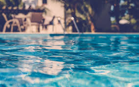
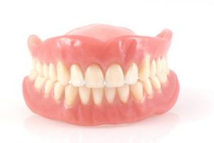

Hola curiosos
Lunares falsos "moda"

La gente usaba lunares falsos (o «parches de belleza») hechos de terciopelo, seda o piel de ratón en el siglo XVIII y los utilizaban para tapar imperfecciones en la piel, luego se puso de moda.
La miel no se pudre

Al menos, las abejas no hacen todo ese trabajo para nada. Todos los alimentos, incluso los que se llaman “no perecederos”, se terminan poniendo en mal estado eventualmente. La miel es, de hecho, el único alimento que nunca lo hace.
El azucar es un "Lujo"
En la edad media el azúcar como lo conocemos venía de oriente y era considerado exótico. Así es que era importado y sumamente caro.
La alberca mas profunda

La alberca más profunda del mundo mide 41 metros de profundidad y es posible sentir vértigo dentro de ella.
Detadura hecha con muertos

Las dentadura se fabricaba con dientes extraídos de la boca de soldados muertos a finales del siglo XVIII y principios del XIX.
El lapiz infinito

Con el lapiz puedes escribir 47 mil palabras con él y dibujar una línea de 56 kilómetro de largo.
Mario bros con que golpea los bloques
Mario Bros golpea los bloques con su mano, no con su cabeza.